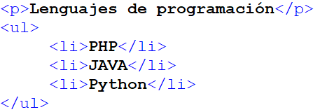
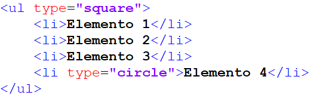
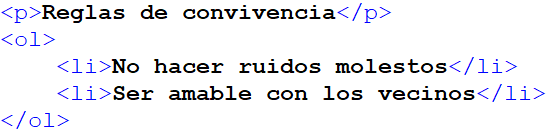
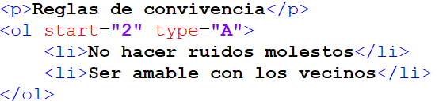
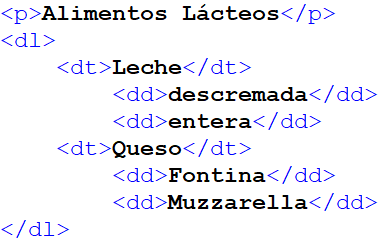
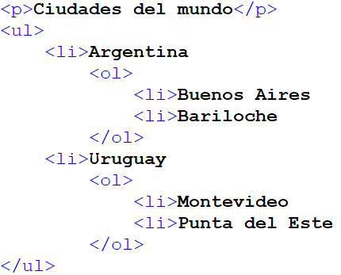

Listas en HTML
Las posibilidades que nos ofrece HTML en cuestión de tratamiento de texto son realmente notables. No se limitan a lo visto hasta ahora, sino que van más lejos todavía. Varios ejemplos de ello son las listas, que sirven para enumerar y definir elementos, los textos preformateados y las cabeceras o títulos.
Las listas originalmente están pensadas para citar, enumerar y definir cosas a través de características, o al menos así lo hacemos en la escritura de textos. Sin embargo, las listas finalmente se utilizan para mucho más que enumerar una serie de puntos, en realidad son un recurso muy interesante para poder maquetar elementos diversos, como barras de navegación, pestañas, etc. Pero esto lo veremos más adelante, al aplicar estilos CSS a las listas.
Podemos distinguir tres tipos de listas HTML:
- Listas desordenadas
- Listas ordenadas
- Listas de definición
Listas desordenadas
Son delimitadas por las etiquetas UL y su cierre (Unordered List). Cada uno de los elementos de la lista es citado por medio de una etiqueta LI ( LI tiene su cierre, aunque si no lo colocas el navegador al ver el siguiente LI interpretará que estás cerrando el anterior). Un ejemplo es:

Podemos definir el tipo de viñeta empleada para cada elemento. Para ello debemos especificarlo por medio del atributo type incluido dentro de la etiqueta de apertura UL, si queremos que el estilo sea válido para toda la lista; o dentro de la etiqueta LI si queremos hacerlo específico de un solo elemento. La sintaxis es del siguiente tipo:
<ul type= "tipo de viñeta">
donde tipo de viñeta puede ser uno de los siguientes:
circle
disc
square
Nota: en algunos navegadores no funciona la opción de cambiar el tipo de viñeta a mostrar y por mucho que nos empeñemos, siempre saldrá el círculo negro.
En caso de que no funcione siempre podemos construir la lista a mano con la viñeta que queramos utilizando CSS.
Vamos a ver un ejemplo de lista con un cuadrado, y en el último elemento colocaremos un círculo. Para ello vamos a colocar el atributo type en la etiqueta UL, con lo que afectará a todos los elementos de la lista.

Listas ordenadas
Las listas ordenadas sirven también para presentar información, en diversos elementos o ítems, con la particularidad que éstos estarán precedidos de un número o una letra para enumerarlos, siempre por un orden.
Para realizar las listas ordenadas usaremos las etiquetas OL (Ordered List) y su cierre. Cada elemento será igualmente indicado por la etiqueta LI, que ya vimos en las listas desordenadas.
Pongamos un ejemplo:

Saldría en pantalla:
Reglas de convivencia
No hacer ruidos molestos
Ser amable con los vecinos
Del mismo modo que para las listas desordenadas, las listas ordenadas ofrecen la posibilidad de modificar el estilo. En concreto nos es posible especificar el tipo de numeración empleado eligiendo entre números (1, 2, 3...), letras minúsculas (a, b, c...) y sus mayúsculas (A, B, C,...) y números romanos en sus versiones mayúsculas (I, II, III...) y minúsculas (i, ii, iii...).
Para realizar dicha selección hemos de utilizar, como para el caso precedente, el atributo type, el cual estará situado dentro de la etiqueta OL. Los valores que puede tomar el atributo en este caso son:
<ol> números (1, 2, 3...)
<ol type= "A">
mayúsculas (A, B, C,...)
<ol type= "a">
minúsculas
(a, b, c...)
<ol type= "I">
mayúsculas
(I, II, III,...)
<ol type= "i">
minúsculas
(i, ii, iii,...)
Nota: recordamos que en algunos navegadores no funciona la opción de cambiar el tipo de viñeta a mostrar.
Puede que en algún caso deseemos comenzar nuestra enumeración por un número o letra que no tiene por qué ser necesariamente el primero de todos. Para ello podemos utilizar un segundo atributo, llamado start, que tendrá como valor un número.
Este número, que por defecto es 1, corresponde al valor a partir del cual comenzamos a definir nuestra lista. Para el caso de las letras o los números romanos, el navegador se encarga de hacer la traducción del número a la letra correspondiente.

Nos arrojaría en pantalla:
Reglas de convivencia
B. No hacer ruidos molestos
C. Ser amable con los vecinos
Listas de definición
Las listas de definición sirven para hacer un conjunto de elementos con pares concepto-descripción. Es decir, se especificarán varios términos por su nombre y se escribirá una definición para cada uno. Cada elemento es presentado junto con su definición, uno detrás de otro.
Para realizar una lista de definición, la etiqueta principal es DL y su cierre (Definition List). La etiquetas del elemento y su definición son DT (Definition Term) y DD (Definition Definition) respectivamente.
Aquí un código de ejemplo y su resultado:

El resultado obtenido:
Alimentos Lácteos
Leche
descremada
entera
Queso
Fontina
Muzzarella
Veremos que cada línea DD se ubica más hacia la izquierda. Este tipo de etiquetas son usadas a menudo con el propósito de crear textos más o menos desplazados hacia la izquierda.
Anidando listas
Podemos anidar estas etiquetas obteniendo listas de la manera deseada, como por ejemplo:

obteniendo:
Ciudades del mundo
Argentina
1. Buenos Aires
2. Bariloche
Uruguay
1. Montevideo
2. Punta del Este
Fuente: Curso Fullstack Phyton del programa Codo a Codo